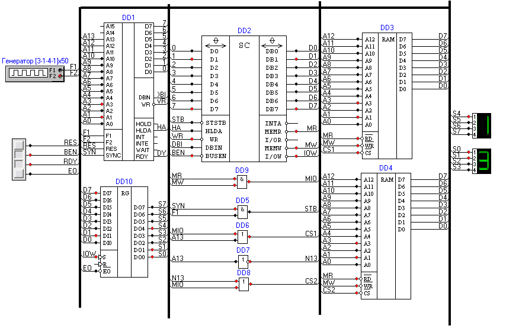
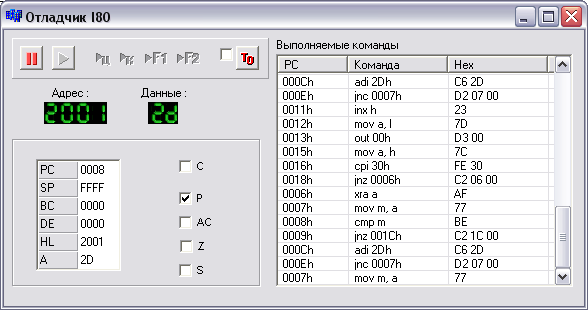

С помощью схемы на базе процессора Intel 8080 можно протестировать один из добавленных модулей памяти (ОЗУ 8K), проверить работу некоторых инструкций процессора, работу системного контроллера, простого регистра и генератора двух тактовых последовательностей.
Схема выглядит так:
На схеме присутствуют элементы:
Схему можно собрать, последовательно добавляя элементы из соответствующих модулей и соединяя их с помощью шин.
На этой схеме можно настроить многие параметры для разных элементов. Например, при щелчке правой кнопкой на УГО генератора появится окно следующего вида:
Это окно было сформировано ядром программы. Модуль, в котором определен генератор, только предоставил список настраиваемых свойств. Такого рода возможности предоставляет новый улучшенный интерфейс для подключаемых модулей.
Аналогичным образом можно вызвать окна настройки для других элементов. Для процессора вызывается окно отладчика, в котором присутствует и дизассемблер:
В данной схеме модуль памяти DD3 отображается на адреса 0000h-1FFFh, а модуль DD4 – на 2000-3FFFh. Регистр предназначен для вывода и имеет адрес порта 00h.
При тестировании процессор последовательно перебирает байты с адресами от 2000h до 3FFFh, записывая в каждый значения от 00h с шагом 2Dh (до переполнения аккумулятора). В идеале лучше взять шаг, равный единице, однако такое тестирование будет выполняться в программе очень долго. При нормальном тестировании на индикаторах отображается младший байт текущего адреса (т.е. значение регистра L). Это значение постоянно увеличивается (естественно, с «наматыванием» при переполнении) При обнаружении ошибки на индикаторах отображается уменьшающееся значение.
Процессор выполняет программу следующего вида:
| Адрес | Мнемоника | Комментарий |
| 0000h | XRA A | Очищаем аккумулятор для вывода |
| 0001h | OUT 00h | Вывод полученного нулевого байта в порт 0 (т.е. на индикаторы) |
| 0003h | LXI H, 2000h | Загрузка начального адреса модуля для тестирования |
| 0006h | XRA A | Очистка аккумулятора. Выполняется в цикле |
| 0007h | MOV M, A | Записываем содержимое аккумулятора в текущий байт памяти |
| 0008h | CMP M | Сравниваем записанное значение со значением аккумулятора |
| 0009h | JNZ 0020h | Если значения не совпадают, переходим к отображению на индикаторах циклически уменьшающегося значения (от FFh к 00h и затем снова к FFh). При нормальном тестировании на индикаторах отображаются возрастающие значения |
| 000Ch | ADI 2Dh | Добавим к аккумулятору значение 2Dh |
| 000Eh | JNC 0007h | Если переполнения нет, запишем байт из аккумулятора по тому же адресу еще раз… |
| 0011h | INX H | Перейдем к следующему байту |
| 0012h | MOV A, L | Загрузим в аккумулятор байт из L |
| 0013h | OUT 00h | Выведем текущее значение L на индикаторы |
| 0015h | MOV A, H | Загрузим в аккумулятор байт из H |
| 0016h | CPI 40h | Если старший байт адреса достиг 40h, мы подошли к концу модуля памяти |
| 0018h | JNZ 0006h | Если нет, то перейдем к тестированию нового байта |
| 001Bh | JMP 0000h | Если да, то начнем все сначала |
| 0020h | DCR A | Уменьшим A на 1 |
| 0021h | OUT 00h | Выведем на индикаторы |
| 0023h | JMP 0020h | Перейдем к 0020h |
При проверке работы на индикаторы выдается постоянно увеличивающееся значение (с наматыванием, естественно). Это означает, что память работоспособна (во всяком случае, этот тест ошибок не выявил).
Если изменить инструкцию по адресу 0009h на JZ 0020h (код CA, 20, 00), на индикаторы выводятся уменьшающиеся значения, как это и должно быть.